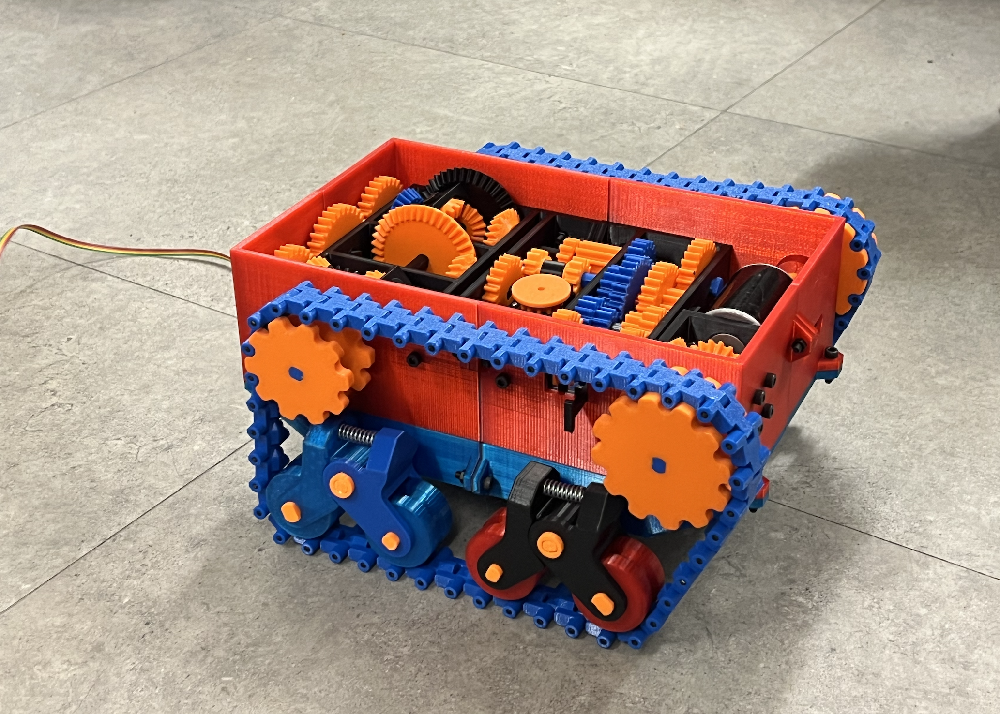
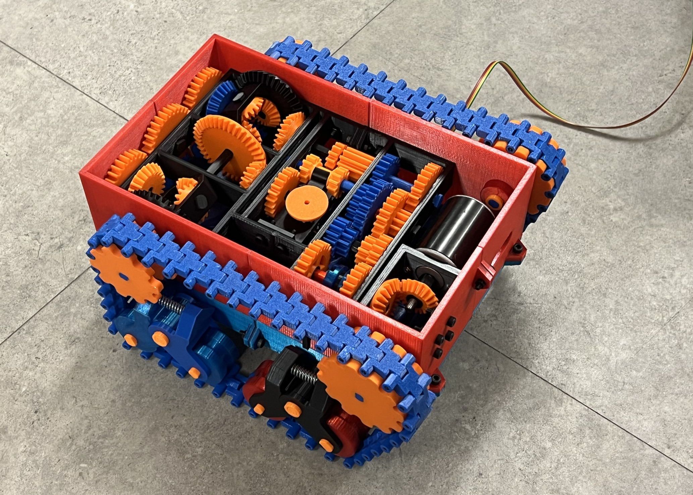
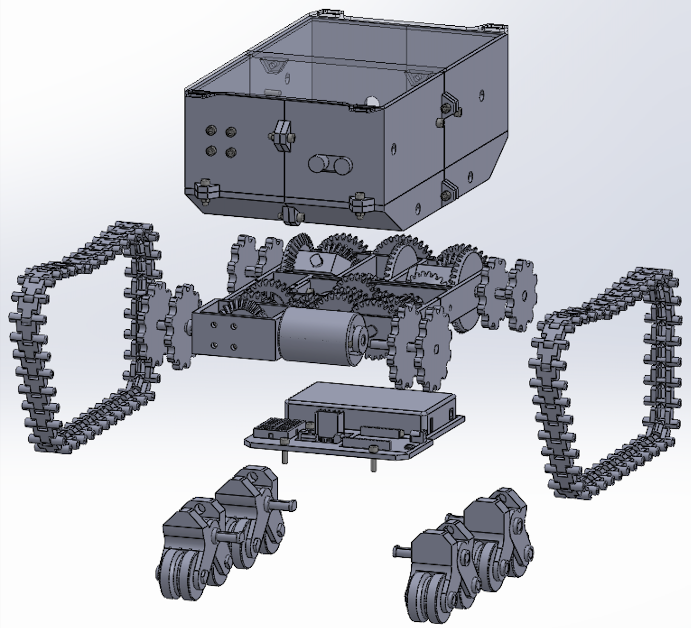

Project Overview
E.D.R.I.S. is a fully 3D-printed unmanned ground vehicle (UGV) designed for emergency delivery applications in hazardous environments — built entirely from scratch with a zero-dollar budget as part of the MECH 2412 Mini-Design course. The robot is modelled after a tank chassis with continuous PETG tracks, a custom two-speed gearbox, double-differential steering, and an Arduino-based control system.
The vehicle was required to carry a minimum 2 kg payload, reach 1.0 m/s on flat terrain, climb a 15° incline, detect obstacles autonomously, and be fully disassembled in under 2 minutes — all without purchasing any structural components.
My Role
As part of a six-person team, I was responsible for the final mechanical system description, structural testing of mechanical subsystems (drivetrain, suspension, and gear shifting), and all finite element analysis (FEA) and hand calculations to verify structural integrity under load.
- FEA: Performed structural finite element analysis on chassis plates confirming max stress of 1.28 MPa — well below PETG's 70 MPa compressive limit.
- Hand Calculations: Force-balance analysis for 15° incline traversal, torque requirements per sprocket, and load-bearing capacity of top and bottom chassis plates.
- Mechanical Testing: Evaluated drivetrain, gear switching, suspension, and steering performance during prototype testing phase.
- System Description: Authored the final system description documenting the complete mechanical architecture.
System Architecture
EDRIS is built around three interconnected subsystems:
- Power & Drive: 12V DC motor feeds an L298N motor driver, routed through a fixed bevel-gear stage into a custom two-speed dog-clutch transmission (23:1 low gear, 12:1 high gear). The 12V lithium-ion battery is positioned at the lowest point to lower the centre of gravity.
- Mechanical Drivetrain: Power flows through a transfer case (servo-actuated rack and pinion) that switches between drive mode and steer mode. Steering is achieved via a double differential — rotating both tracks in opposite directions for zero-radius turns. Spring-loaded rocker suspension supports all four road wheels, distributing load with a static capacity of 10 kg.
- Control & Sensing: An analog joystick on an Arduino Uno R4 controls motor speed and direction. A deadzone prevents drift. IR and ultrasonic sensors were integrated for autonomous obstacle detection (gradual deceleration at 30 cm, emergency stop at 10 cm), though sensor integration failed post-assembly due to suspected electrical damage.
Vehicle in Action
Watch the final prototype demonstrating drive, steering, and gear-shifting capabilities:
CAD & Prototype

Final assembled prototype — front quarter view

Prototype side view — continuous PETG track and rocker suspension visible

Exploded CAD assembly — SolidWorks
Key Results
- Dimensions: 201.5 mm × 329 mm × 133 mm
- Payload: Successfully transported 2 kg on flat terrain
- Speed: 0.28 m/s (low gear, 23:1) · 0.51 m/s (high gear, 12:1)
- Gear Shifting: Average 3.5 seconds neutral-to-gear
- Suspension: 10 kg static load capacity; traversed obstacles and rough terrain
- Disassembly: 1 minute 45 seconds for full teardown (modular M5/M2.5 fasteners + press-fit)
- Chassis Stress (FEA): Max 1.28 MPa — safety factor of ~55× against PETG compressive limit
Design Challenges
The original gear ratios of 12.72:1 (low) and 2.06:1 (high) produced speeds up to 4.31 m/s — high enough to melt the PETG shafts during testing. Ratios were completely redesigned to 23:1 and 12:1 to prioritize torque and thermal safety. The CVT originally selected was replaced with a manually shifted two-speed dog clutch to stay within the zero-dollar budget and eliminate belt slippage risk.
IR and ultrasonic sensors functioned correctly in isolation but became non-functional after full system integration, likely due to electrical damage sustained during assembly. The joystick control system remained fully functional throughout, and the mechanical drivetrain, steering, suspension, and gearbox all performed as intended.